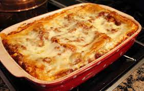

World's Best Lasagna

Making lasagna can be time-consuming, but the results are well worth the wait. You'll find a detailed ingredient list and step-by-step instructions in the recipe below, but let's go over the basics:
- Meat
- Onion and Garlic
- Tomato Products
- Sugar
- Spices and seasoning
- Lasagna noodles
- Cheeses
- Egg
- Make the meat sauce.
- Cook the noodles.
- Make the ricotta mixture.
- Layer the lasagna according to the recipe instructions.
- Cover with foil and bake.
- Let the lasagna rest before serving.